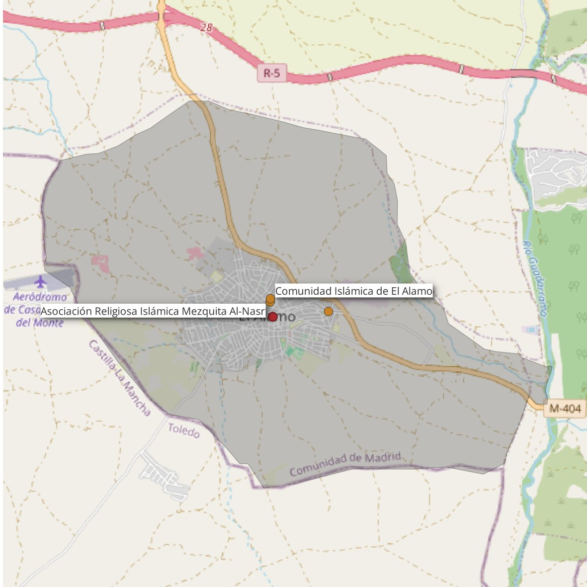
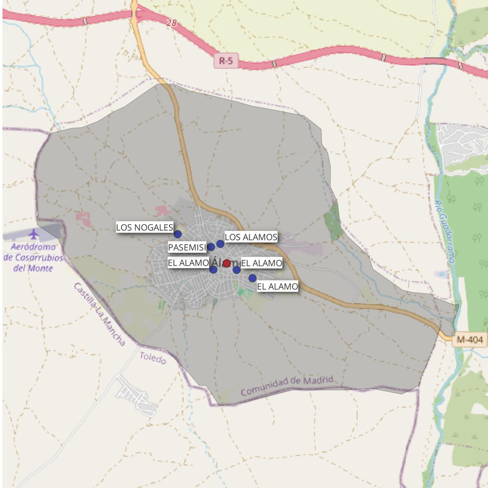

Puntos de interés en el territorio parroquial
Parroquia Santiago Apóstol (El Álamo) · Arciprestazgo de Navalcarnero
Entidades religiosas no católicas

3 entidades religiosas no católicas en el territorio de la parroquia.
Musulmanes (2)
- Asociación Religiosa Islámica Mezquita Al-NasrCalle Timoteo Gaitán 6, Álamo
- Comunidad Islámica de El AlamoCalle de Timoteo Gaitán Ortega 26, Álamo
Otras Religiones (1)
- Iglesia del Santo Daime de España (Centro Ecléctico de la Fuente de Luz Universal, Raimundo Ireneu Serra de España)Camino de las Huertas 4, Álamo
Fuente: Registro de Entidades Religiosas del Ministerio de la Presidencia, Justicia y Relaciones con las Cortes. Situación en el mapa: dirección geocodificada con CartoCiudad (IGN) o Nominatim (OpenStreetMap).
Centros educativos

6 centros educativos en el territorio de la parroquia (público: 4, privado: 1, privado concertado: 1).
| Centro | Tipo | Titularidad | Domicilio | Web |
|---|---|---|---|---|
| EL ALAMO | Colegio de educación infantil y primaria | Público | Calle del Río Alagón, 1, 28607 Álamo, El | Página web |
| EL ALAMO | Escuela municipal de música | Público | Calle del Romero, 1, 28607 Álamo, El | Página web |
| EL ALAMO | Instituto de educación secundaria | Público | Paseo del Olivar, 62, 28607 Álamo, El | Página web |
| LOS ALAMOS | Escuela infantil privada | Privado | Calle de Antonio Machado, 6, 28607 Álamo, El | |
| LOS NOGALES | Centro privado de educación infantil, primaria y secundaria | Privado concertado | Camino de Villamanta, s/n, 28607 Álamo, El | Página web |
| PASEMISI | Escuela infantil-casa de niños | Público | Calle del Espino, 6, 28607 Álamo, El | Página web |
Fuente: registro de centros educativos de la Comunidad de Madrid. Solo se recogen los centros en situación de alta.